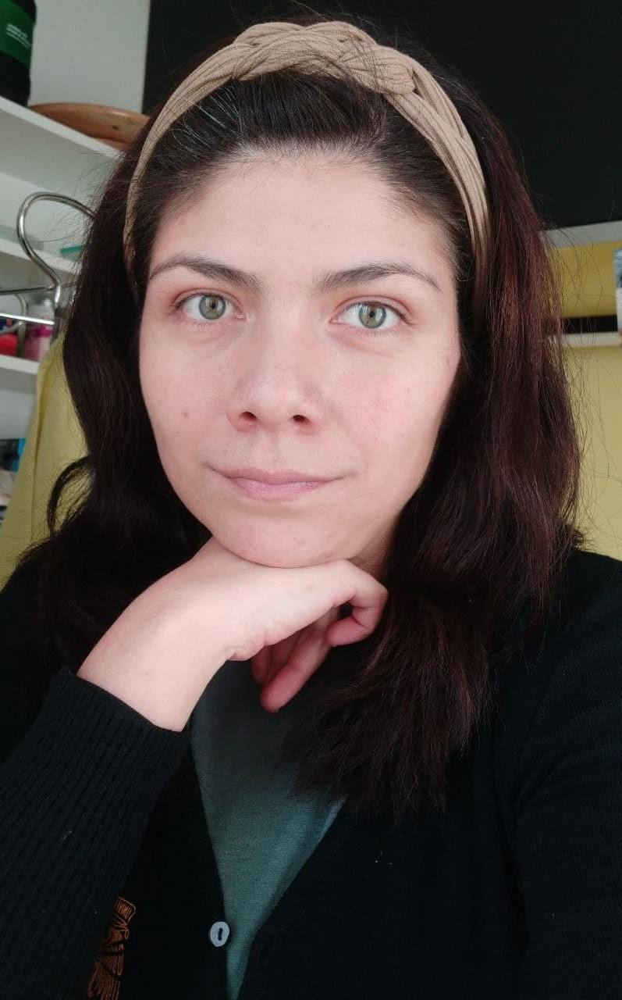

SIGTYP2024 — MARCH,22nd — Malta/Hybrid
We kindly invite everyone to join the virtual part of SIGTYP 2024! Below you may explore papers, slides, and recorded talks. On Google Group you may also find a single Zoom link that will be used during the day of the workshop.
SIGTYP2024 Proceedings are now available here.
Time zone: Malta
By SIGTYP2024 Organizing Committee (Oksana Dereza)
Opening remarks: the SIGTYP 2024 workshop, SIGTYP development and MRL!
✻ Keynote Talk ✻
 There are few - if any - universals which hold across all known languages. Promising candidates are quantitative laws such as Zipf’s law of word frequencies and Zipf’s law of abbreviation. This
talk will review some of the current research into these laws from a cross-linguistic perspective. This includes a discussion of the methodological challenges when working with diverse languages, modalities,and writing systems, as well as the controversial question how “meaningful” the laws are given random baselines. Finally, an avenue for further research is explored: the challenge of defining a statistical fingerprint for human languages.
There are few - if any - universals which hold across all known languages. Promising candidates are quantitative laws such as Zipf’s law of word frequencies and Zipf’s law of abbreviation. This
talk will review some of the current research into these laws from a cross-linguistic perspective. This includes a discussion of the methodological challenges when working with diverse languages, modalities,and writing systems, as well as the controversial question how “meaningful” the laws are given random baselines. Finally, an avenue for further research is explored: the challenge of defining a statistical fingerprint for human languages.
Bio: Christian Bentz is currently an Assistant Professor at the Department of General Linguistics, University of Tübingen. He received his PhD in Computation, Cognition, and Language from the University of Cambridge. His research interests include information theory, quantitative linguistics, language typology, and language evolution.
✻ Low-Resource NLP ✻
By Jonathan Janetzki, Gerard De Melo, Joshua Nemecek and Daniel Lee Whitenack
Over 7,000 of the world’s 7,168 living languages are still low-resourced. This paper aims to narrow the language documentation gap by creating multiparallel dictionaries, clustered by SIL’s semantic domains. This task is new for machine learning and has previously been done manually by native speakers. We propose GUIDE, a language-agnostic tool that uses a GNN to create and populate semantic domain dictionaries, using seed dictionaries and Bible translations as a parallel text corpus. Our work sets a new benchmark, achieving an exemplary average precision of 60% in eight zero-shot evaluation languages and predicting an average of 2,400 dictionary entries. We share the code, model, multilingual evaluation data, and new dictionaries with the research community.
By Nay San, Georgios Paraskevopoulos, Aryaman Arora, Xiluo He, Prabhjot Kaur, Oliver Adams and Dan Jurafsky
While massively multilingual speech models like wav2vec 2.0 XLSR-128 can be directly fine-tuned for automatic speech recognition (ASR), downstream performance can still be relatively poor on languages that are underrepresented in the pre-training data. Continued pre-training on 70–200 hours of untranscribed speech in these languages can help — but what about languages without that much recorded data? For such cases, we show that supplementing the target language with data from a similar, higher-resource ‘donor’ language can help. For example, continued pretraining on only 10 hours of low-resource Punjabi supplemented with 60 hours of donor Hindi is almost as good as continued pretraining on 70 hours of Punjabi. By contrast, sourcing data from less similar donors like Bengali does not improve ASR performance. To inform donor language selection, we propose a novel similarity metric based on the sequence distribution of induced acoustic units: the Acoustic Token Distribution Similarity (ATDS). Across a set of typologically different target languages (Punjabi, Galician, Iban, Setswana), we show that the ATDS between the target language and its candidate donors precisely predicts target language ASR performance.
Coffee break, chats, linguistic trivia
✻ Typology and Language Comparison ✻
By Ho Wang Matthew Sung, Jelena Prokic and Yiya Chen
Traditional dialectology or dialect geography is the study of geographical variation of language. Originated in Europe and pioneered in Germany and France, this field has predominantly been focusing on sounds, more specifically, on segments. Similarly, quantitative approaches to language variation concerned with the phonetic level are in most cases focusing on segments as well. However, more than half of the world’s languages include lexical tones (Yip 2002). Despite this, tones are still underexplored in quantitative language comparison, partly due to the low accessibility of the suitable data. This paper aims to introduce a newly digitised dataset which comes from the Yue- and Pinghua-speaking areas in Southern China, with over 100 dialects. This dataset consists of two parts: tones and segments. In this paper, we illustrate how we can computationaly model tones in order to explore linguistic variation. We have applied a tone distance metric on our data, and we have found that 1) dialects also form a continuum on the tonal level and 2) other than tonemic (inventory) and tonetic differences, dialects can also differ in the lexical distribution of tones. The availability of this dataset will hopefully enable further exploration of the role of tones in quantitative typology and NLP research.
By Kanji Kato, So Miyagawa and Natsuko Nakagawa
LAJaR (Language Atlas of Japanese and Ryukyuan) is a linguistic typology database focusing on micro-variation of the Japonic languages. This paper aims to report the design and progress of this ongoing database project. Finally, we also show a case study utilizing its database on zero copulas among the Japonic languages.
By Wessel Poelman, Esther Ploeger, Miryam De Lhoneux and Johannes Bjerva
In order to draw generalizable conclusions about the performance of multilingual models across languages, it is important to evaluate on a set of languages that captures linguistic diversity. Linguistic typology is increasingly used to justify language selection, inspired by language sampling in linguistics (e.g., Rijkhoff and Bakker, 1998). In other words, more and more papers suggest generalizability by evaluating on ‘typologically diverse languages’ (see Figure 1). However, justifications for ‘typological diversity’ exhibit great variation, as there seems to be no set definition, methodology or consistent link to linguistic typology. In this work, we provide a systematic insight into how previous work in the ACL Anthology uses the term ‘typological diversity’. Our two main findings are: (1) What is meant by typologically diverse language selection is not consistent; (2) The actual typological diversity of the language sets in these papers varies greatly. We argue that, when making claims about ‘typological diversity’, an operationalization of this should be included. A systematic approach that quantifies this claim, also with respect to the number of languages used, would be even better.
By Luise Häuser, Gerhard Jäger, Johann-Mattis List, Taraka Rama and Alexandros Stamatakis
In traditional studies on language evolution, scholars often emphasize the importance of sound laws and sound correspondences for phylogenetic inference of language family trees. However, to date, computational approaches have typically not taken this potential into account. Most computational studies still rely on lexical cognates as major data source for phylogenetic reconstruction in linguistics, although there do exist a few studies in which authors praise the benefits of comparing words at the level of sound sequences. Building on (a) ten diverse datasets from different language families, and (b) state-of-the-art methods for automated cognate and sound correspondence detection, we test, for the first time, the performance of sound-based versus cognate-based approaches to phylogenetic reconstruction. Our results show that phylogenies reconstructed from lexical cognates are topologically closer, by approximately one third with respect to the generalized quartet distance on average, to the gold standard phylogenies than phylogenies reconstructed from sound correspondences.
By Damir Cavar, Ludovic Mompelat and Muhammad S. Abdo
Ellipsis constructions are challenging for State-of-the-art (SotA) Natural Language Processing (NLP) technologies. Although theoreticallywell-documented and understood, there needs to be more sufficient cross-linguistic language resources to document, study, and ultimately engineer NLP solutions that can adequately provide analyses for ellipsis constructions. This article describes the typological data set on ellipsis that we created for currently seventeen languages. We demonstrate how SotA parsers based on a variety of syntactic frameworks fail to parse sentences with ellipsis, and in fact, probabilistic, neural, and Large Language Models (LLM) do so, too. We discuss experiments that focus on detecting sentences with ellipsis, predicting the position of elided elements, and predicting elided surface forms in the appropriate positions. We show that cross-linguistic variation of ellipsis-related phenomena has different consequences for the architecture of NLP systems.
Lunch, discussions, linguistic trivia
✻ Keynote Talk ✻

During this presentation, I will elaborate on the importance of capturing the immense diversity inherent in natural languages. This extends beyond advancing language technologies; it also serves
to answer interdisciplinary research questions and enrich the exploration of linguistic typology through computational lenses. By harnessing textual data and unsupervised NLP techniques, we can induce typological knowledge, thereby facilitating the expansion of existing typological databases and facilitating more comprehensive language comparisons for various NLP applications.
I will illustrate these concepts through a case study that demonstrates how simple techniques such as subword tokenization and the analysis of multilingual text corpora enable the study of the morphological typology of languages and the complexity of their morphological systems. We will also examine the implications and constraints associated with these methodologies.
Bio: Ximena Gutierrez-Vasques is a computational linguist with an interdisciplinary focus to deepen the study of human language. Her lines of research cover multilingual NLP, computational morphology, and NLP under-resourced languages of the Americas. She was a postdoctoral researcher at the University of Zürich where she specialized in approaches for modeling linguistic complexity and typology using text corpora and inspired by information theory. She recently joined an interdisciplinary research center in Mexico (CEIICH, UNAM), where she works in the interface between humanities and the field of AI.
✻ Multilinguality ✻
By Damiaan J W Reijnaers and Charlotte Pouw
This paper lays the groundwork for initiating research into Source Language Identification; the task of identifying the original language of a machine-translated text. We contribute a carefully-crafted dataset of translations from a typologically diverse spectrum of languages into English and use it to set initial baselines for this novel task. The dataset is publicly available on our GitHub repository: damiaanr/gtnc.
By Nathan Andrew Chi, Teodor Malchev, Riley Kong, Ryan Andrew Chi, Lucas Huang, Ethan A Chi, R. Thomas McCoy and Dragomir Radev
Towards understanding the capability of models to perform multilingual few-shot reasoning, we propose MODELING , a benchmark of Rosetta stone puzzles (Bozhanov and Derzhanski, 2013). This type of puzzle, originating from competitions called Linguistics Olympiads, contain a small number of sentences in a target language not previously known to the solver. Each sentence is translated to the solver’s language such that the provided sentence pairs uniquely specify a single most reasonable underlying set of rules; solving requires applying these rules to translate new expressions.
By Emil Svoboda and Magda Ševčı́ková
In Universal Dependencies, compounds, which we understand as words containing two or more roots, are represented according to tokenization, which reflects the orthographic conventions of the language. A closed compound corresponds to a single word in Universal Dependencies (e.g. waterfall) while a hyphenated compound (father-in-law) and an open compound (apple pie) to multiple words. The aim of this paper is to open a discussion on how to move towards a more consistent annotation of compounds. The solution we argue for is to represent the internal structure of all compound types analogously to syntactic phrases, which would not only increase the comparability of compounding within and across languages, but also allow comparisons of compounds and syntactic phrases.
By Kushal Tatariya, Heather Lent, Johannes Bjerva and Miryam De Lhoneux
Emotion classification is a challenging task in NLP due to the inherent idiosyncratic and subjective nature of linguistic expression, especially with code-mixed data. Pre-trained language models (PLMs) have achieved high performance for many tasks and languages, but it remains to be seen whether these models learn and are robust to the differences in emotional expression across languages. Sociolinguistic studies have shown that Hinglish speakers switch to Hindi when expressing negative emotions and to English when expressing positive emotions. To understand if language models can learn these associations, we study the effect of language on emotion prediction across 3 PLMs on a Hinglish emotion classification dataset. Using LIME (Ribeiro et al., 2016) and token level language ID, we find that models do learn these associations between language choice and emotional expression. Moreover, having code-mixed data present in the pre-training can augment that learning when task- specific data is scarce. We also conclude from the misclassifications that the models may over-generalise this heuristic to other infrequent examples where this sociolinguistic phenomenon does not apply.
Coffee, discussions
✻ Shared Task Session ✻
By Oksana Dereza, Adrian Doyle, Priya Rani, Atul Ojha, Pádraic Moran and John McCrae
This paper discusses the organisation and findings of the SIGTYP 2024 Shared Task on Word Embedding Evaluation for Ancient and Historical Languages. The shared task was split into the constrained and unconstrained tracks and involved solving either three or five problems for 12+ ancient and historical languages belonging to four language families and making use of six different scripts. There were 14 registrations in total, of which three teams participated in each track. Out of these six submissions, two systems were successful in the constrained setting and another two in the unconstrained setting, and four system description papers were submitted by different teams. The best average results for POS-tagging, lemmatisation and morphological feature prediction were 96.09%, 94.88% and 96.68% respectively. In the mask filling problem, the winning team could not achieve a higher average score across all 16 languages than 5.95% at the word level, which demonstrates the difficulty of this problem. At the character level, the best average result over 16 languages was 55.62%.
By Aleksei Dorkin and Kairit Sirts
We present our submission to the unconstrained subtask of the SIGTYP 2024 Shared Task on Word Embedding Evaluation for Ancient and Historical Languages for morphological annotation, POS-tagging, lemmatization, character- and word-level gap-filling. We developed a simple, uniform, and computationally lightweight approach based on the adapters framework using parameter-efficient fine-tuning. We applied the same adapter-based approach uniformly to all tasks and 16 languages by fine-tuning stacked language- and task-specific adapters. Our submission obtained an overall second place out of three submissions, with the first place in word-level gap-filling. Our results show the feasibility of adapting language models pre-trained on modern languages to historical and ancient languages via adapter training.
By Frederick Riemenschneider and Kevin Krahn
Historical languages present unique challenges to the NLP community, with one prominent hurdle being the limited resources available in their closed corpora. This work describes our submission to the constrained subtask of the SIGTYP 2024 shared task, focusing on PoS tagging, morphological tagging, and lemmatization for 13 historical languages. For PoS and morphological tagging we adapt a hierarchical tokenization method from Sun et al. (2023) and combine it with the advantages of the DeBERTa-V3 architecture, enabling our models to efficiently learn from every character in the training data. We also demonstrate the effectiveness of character-level T5 models on the lemmatization task. Pre-trained from scratch with limited data, our models achieved first place in the constrained subtask, nearly reaching the performance levels of the unconstrained task’s winner. Our code is available at https://github.com/bowphs/SIGTYP-2024-hierarchical-transformers.
By Johannes Heinecke
SIGTYP’s Shared Task on Word Embedding Evaluation for Ancient and Historical Languages was proposed in two variants, constrained or unconstrained. Whereas the constrained variant disallowed any other data to train embeddings or models than the data provided, the unconstrained variant did not have these limits. We participated in the five tasks of the unconstrained variant and came out first. The tasks were the prediction of part-of-speech, lemmas and morphological features and filling masked words and masked characters on 16 historical languages. We decided to use a dependency parser and train the data using an underlying pretrained transformer model to predict part-of-speech tags, lemmas, and morphological features. For predicting masked words, we used multilingual distilBERT (with rather bad results). In order to predict masked characters, our language model is extremely small: it is a model of 5-gram frequencies, obtained by reading the available training data.
By Lester James V. Miranda
In this paper, we describe Allen AI’s submission to the constrained track of the SIGTYP 2024 Shared Task. Using only the data provided by the organizers, we pretrained a transformer-based multilingual model, then finetuned it on the Universal Dependencies (UD) annotations of a given language for a downstream task. Our systems achieved decent performance on the test set, beating the baseline in most language-task pairs, yet struggles with subtoken tags in multiword expressions as seen in Coptic and Ancient Hebrew. On the validation set, we obtained ≥70% F1-score on most language-task pairs. In addition, we also explored the cross-lingual capability of our trained models. This paper highlights our pretraining and finetuning process, and our findings from our internal evaluations.
✻ Typology and Human Language Processing ✻
By Weijie Xu and Richard Futrell
Human processing of nonlocal syntactic dependencies requires the engagement of limited working memory for encoding, maintenance, and retrieval. This process creates an evolutionary pressure for language to be structured in a way that keeps the subparts of a dependency closer to each other, an efficiency principle termed dependency locality. The current study proposes that such a dependency locality pressure can be modulated by the surprisal of the antecedent, defined as the first part of a dependency, due to strategic allocation of working memory. In particular, antecedents with novel and unpredictable information are prioritized for memory encoding, receiving more robust representation against memory interference and decay, and thus are more capable of handling longer dependency length. We examine this claim by analyzing dependency corpora of 11 languages, with word surprisal generated from GPT-3 language model. In support of our hypothesis, we find evidence for a positive correlation between dependency length and the antecedent surprisal in most of the languages in our analyses. A closer look into the dependencies with core arguments shows that this correlation consistently holds for subject relations but not for object relations.
By Jessica Nieder and Johann-Mattis List
Closely related languages show linguistic similarities that allow speakers of one language to understand speakers of another language without having actively learned it. Mutual intelligibility varies in degree and is typically tested in psycholinguistic experiments. To study mutual intelligibility computationally, we propose a computer-assisted method using the Linear Discriminative Learner, a computational model developed to approximate the cognitive processes by which humans learn languages, which we expand with multilingual semantic vectors and multilingual sound classes. We test the model on cognate data from German, Dutch, and English, three closely related Germanic languages. We find that our model’s comprehension accuracy depends on 1) the automatic trimming of inflections and 2) the language pair for which comprehension is tested. Our multilingual modelling approach does not only offer new methodological findings for automatic testing of mutual intelligibility across languages but also extends the use of Linear Discriminative Learning to multilingual settings.
By Li Junlin, Yu-Yin Hsu, Emmanuele Chersoni and Bo Peng
Our study presents some highlights on how to account for multilinguality by language models and how they facilitate in-depth investigation of closely related languages in comprehension. Specifically, Mandarin and Cantonese exhibit different advantages in terms of the cognitive effort on word-visual processing (for Mandarin) and sentence contextual processing (for Cantonese). Results of our study will further inform the performance of different types of language models and metrics’ usefulness in predicting eye-movement patterns in reading Mandarin and Cantonese texts.
✻ Findings ✻
By Christian Khairallah, Reham Marzouk, Salam Khalifa, Mayar Nassar, Nizar Habash
Modern Standard Arabic (MSA) nominals present many morphological and lexical modeling challenges that have not been consistently addressed previously. This paper attempts to define the space of such challenges, and leverage a recently proposed morphological framework to build a comprehensive and extensible model for MSA nominals. Our model design addresses the nominals’ intricate morphotactics, as well as their paradigmatic irregularities. Our implementation showcases enhanced accuracy and consistency compared to a commonly used MSA morphological analyzer and generator. We make our models publicly available.
By SIGTYP2024 Organizing Committee
Stay with us for SIGTYP 2025!
THANK YOU ALL!